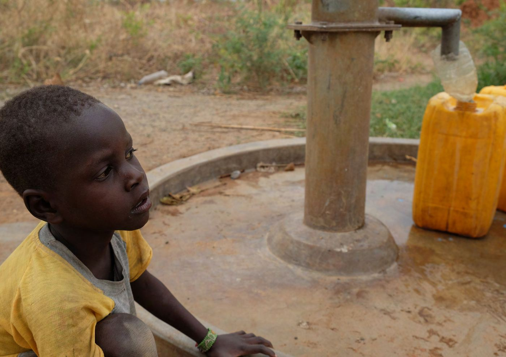

Rapports et publications
Les rapports annuels de Caritas Africa depuis 2011, son cadre stratégique 2024–2030 et les publications du Secrétariat exécutif régional, en français, anglais et portugais.
Partager les savoirs du réseau
Les espaces où les Caritas d'Afrique échangent leurs pratiques et leurs documents de travail.